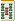
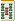

（114）スライドショー解答
|

現在、一上定（イーシャンテン）。次に有効牌であれば、何万、何索、何筒を引いてもテンパイする（字牌ではテンパイできない）。このような手の最多有効牌形を示してほしい。(by
ASAMI)
|
ヒデ 投稿日：2005/06/07(Tue)
初めて書き込みをします。ヒデです。
牌謎のスライドショーですが答えは字牌５種が対子で違う字牌が暗刻の形ではないでしょうか。
|
あさみ投稿日：2005/06/07(Tue)
初めまして、ヒデさん。(^-^)/
この形ですと、７種類めの字牌でテンパイできますね。しかし問題は、「字牌ではテンパイできない」です。
しかし正直、この形は気がついていなかった。（^-^；
気がついていれば「スライドショーパート２」で出題できたかも....（^-^；
|
なかしま 投稿日：2005/06/17(Fri)
珍しく考えてみました。
七対子一向聴で、残りの３枚は萬子筒子索子１枚ずつ。
ほーら、これなら最小の３種類の牌でテンパイですよ！？
・・・あれ？問題は最多だったっけ？
|
あさみ 投稿日：2005/06/17(Fri)
はーい、なかしまさん、大正解です。
てなワケ、ないよね....（^-^；
|
かっしー 投稿日：2005/06/20(Mon)
掲示板に最小待ち数の聴牌が話題になっていたので、私も考えてみました。
     
有効牌は、3種類8枚です。一枚減りました。
|
あさみ 投稿日：2005/06/21(The)
う〜ん、なるほろ....たしかに物理的にはノーテン同様ですね。
しかし論理的にはテンパイなので、ちと反則技のような（^-^；
|
かっしー 投稿日：2005/06/21(Tue)
う、確かに。そこで修正しました。
|
あさみ 投稿日：2005/06/23(Thu)
いや、たしかにこれは、有効牌３種８枚の一上定。（^-^）
ただこの有効牌は索子だけですが、スライドショーは万筒索が対象。
その意味では七対子の万筒索１枚持ちの方が題意には沿ってますが、とっても面白いです。（^-^；
|
かっしー 投稿日：2005/06/21(Tue)
昨日の時点では「（９９）十八羅漢」の形を思っていたんです。
          
18種５９牌
で、萬子、筒子、索子で、受けのある形なんてあるのかな、と考え始めたら、ひらめきました。
      
聴牌になる牌は
        ＝ ８種２８牌 ＝ ８種２８牌
   ＝ ８種２８牌 ＝ ８種２８牌
＝ ２種５牌
合計＝１８種６１牌
で、どうでしょう？
|
あさみ 投稿日：2005/06/23(Thu)
こんにちわ、かっしーさん
みごと正解で〜す。(^-^)/
＃万子をの形にすると、サンシキができるかも。（^-^；
>昨日の時点では「（９９）十八羅漢」の形を思っていたんです。
なるへそ。
もちろん十八羅漢の有効牌は万子と索子。スライドショーは万筒索ですから、そこが違いますね。
|